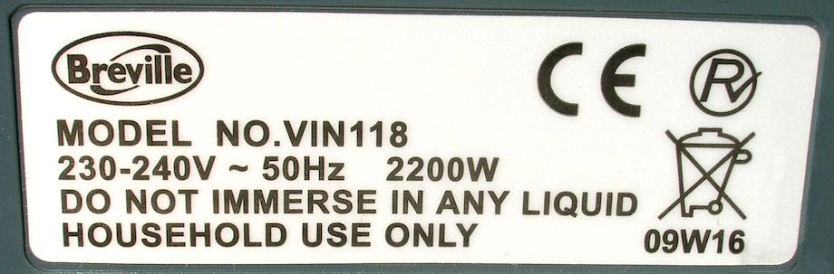

Power is the rate of transfer of energy. The unit of power is the watt (W). One watt is the transfer of 1 joule of energy per second (1 W = 1 J/s). An electrical appliance with a power of 75 W transfers 75 J of energy each second.
Power is often given in kilowatts (kW). 1 kW = 1000 W (an energy transfer of 1000 J/s, or 1 kJ/s).
The power rating of an appliance tells you how much energy it uses each second. A 2.2 kW iron uses 2200 joules of energy each second:

The amount of energy transferred by an electrical appliance depends on the power of the appliance and how long it is switched on.
Energy transferred can be calculated from:
energy transferred (in joules) =
power (in watts) × time (in seconds).
Example How much energy is transferred by a 2.5 kW hairdryer switched on for 30 seconds?
energy transferred = 2500 × 30
= 750 000 J
AQA: In symbols, energy transferred can be calculated from:
E = P × t
Energy (E) is in joules when power (P) is in watts and time (t) is in seconds.
The table lists some typical powers of electrical appliances used in the home:
Appliance
Power rating
digital radio
3 W
electric iron
2.2 kW
electric kettle
3 kW
LCD TV
100 W
microwave oven
1 kW
vacuum cleaner
1.2 kW
washing machine
500 W
Calculating power (AQA, Edexcel)
Power can be calculated from:
Example An electric drill transfers 13 000 J of energy in 20 seconds. What is its power?
Electrical power (Edexcel, OCR)
The power of an electrical appliance depends on the potential difference and the current that flows in the appliance. For the same voltage (potential difference), a more powerful appliance takes more current.
Electrical power can be calculated from:
power = current × voltage
(watt, W) (ampere, A) (volt, V)
Example A travel kettle working from the mains electricity supply at 230 V takes a current of 3 A. What is its power?
power = 3 × 230 = 690 W
Edexcel: In symbols, electrical power can be calculated using:
P = I × V
where power (P) is in watts, current (I) is in amperes and potential difference (voltage, V) is in volts.
The kilowatt-hour
A joule is a very small amount of energy, so a watt is a very small amount of power.
A kilowatt-hour (kWh) is the amount of energy transferred by a 1 kW appliance in 1 hour.
There are 60 × 60 seconds in 1 hour, so 1 kWh is equal to 1000 × 60 × 60 = 3 600 000 J.
Many electrical appliances have powers measured in kilowatts. If they are used for several hours, the energy transferred is a very large number of joules. For this reason, energy transferred from the mains electricity supply is measured in kilowatt-hours.
Electricity meters measure the amount of energy supplied to consumers in kWh (see also Section 18.3).
AQA, OCR: Energy transferred from the mains (in kilowatt-hours) = power of appliance (in kilowatts) × time in use (in hours)
Example How much energy is transferred by a 2 kW electric heater switched on for 4½ hours?
energy transferred = 2 × 4.5
= 9 kWh
AQA: In symbols, energy transferred can be calculated from:
E = P × t
Energy (E) is in kilowatt-hours when power (P) is in kilowatts and time (t) is in hours.